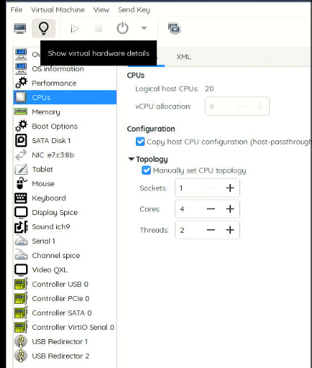

20250210
- upgrading ollama for using 70b
- backup the ybd images using clonezilla(kx6780A & kylinv10)
- rtx 1660s(not good)/rtx 3050(good) vfio
- during vfio works, solved the rtl driver issue and systemd reboot issue.
1. upgrade ollama
issue:
llama_model_load: error loading model: done_getting_tensors: wrong number of tensors; expected 724, got 723
solved via:
curl https://ollama.ai/install.sh | sh
beware of the gfw.
2. passthrough of gtx1660s/3050
Notice: single gpu passthrough.
Bios configuration:

After reboot, only 1 card is available(no 3d controller of intel-uhd630).
$ sudo apt update -y
$ sudo apt install -y sddm awesome
$ sudo vim /etc/sddm.conf
[General]
InputMethod=
[Autologin]
User=xxx
Session=awesome
This makes the host OS autologin.
Edit the bootloader(grub):
$ sudo vim /etc/default/grub
GRUB_CMDLINE_LINUX_DEFAULT=" net.ifnames=0 biosdevname=0 ipv6.disable=1 intel_iommu=on intel_iommu=pt kvm.ignore_msrs=1"
$ sudo update-grub2 && sudo reboot
After reboot, record the iommu infos:
dash@i9server:~$ sudo ./iommu.sh
IOMMU Group 0:
00:00.0 Host bridge [0600]: Intel Corporation Comet Lake-S 6c Host Bridge/DRAM Controller [8086:9b33] (rev 05)
IOMMU Group 1:
00:01.0 PCI bridge [0604]: Intel Corporation 6th-10th Gen Core Processor PCIe Controller (x16) [8086:1901] (rev 05)
01:00.0 VGA compatible controller [0300]: NVIDIA Corporation TU116 [GeForce GTX 1660 SUPER] [10de:21c4] (rev a1)
01:00.1 Audio device [0403]: NVIDIA Corporation TU116 High Definition Audio Controller [10de:1aeb] (rev a1)
01:00.2 USB controller [0c03]: NVIDIA Corporation TU116 USB 3.1 Host Controller [10de:1aec] (rev a1)
01:00.3 Serial bus controller [0c80]: NVIDIA Corporation TU116 USB Type-C UCSI Controller [10de:1aed] (rev a1)
IOMMU Group 10:
00:1f.0 ISA bridge [0601]: Intel Corporation B460 Chipset LPC/eSPI Controller [8086:a3c8]
00:1f.2 Memory controller [0580]: Intel Corporation Memory controller [8086:a3a1]
00:1f.3 Audio device [0403]: Intel Corporation Comet Lake PCH-V cAVS [8086:a3f0]
00:1f.4 SMBus [0c05]: Intel Corporation Comet Lake PCH-V SMBus Host Controller [8086:a3a3]
IOMMU Group 2:
00:04.0 Signal processing controller [1180]: Intel Corporation Xeon E3-1200 v5/E3-1500 v5/6th Gen Core Processor Thermal Subsystem [8086:1903] (rev 05)
IOMMU Group 3:
00:08.0 System peripheral [0880]: Intel Corporation Xeon E3-1200 v5/v6 / E3-1500 v5 / 6th/7th/8th Gen Core Processor Gaussian Mixture Model [8086:1911]
IOMMU Group 4:
00:14.0 USB controller [0c03]: Intel Corporation Comet Lake PCH-V USB Controller [8086:a3af]
00:14.2 Signal processing controller [1180]: Intel Corporation Comet Lake PCH-V Thermal Subsystem [8086:a3b1]
IOMMU Group 5:
00:15.0 Signal processing controller [1180]: Intel Corporation Device [8086:a3e0]
00:15.1 Signal processing controller [1180]: Intel Corporation Device [8086:a3e1]
IOMMU Group 6:
00:16.0 Communication controller [0780]: Intel Corporation Comet Lake PCH-V HECI Controller [8086:a3ba]
IOMMU Group 7:
00:17.0 SATA controller [0106]: Intel Corporation 400 Series Chipset Family SATA AHCI Controller [8086:a382]
IOMMU Group 8:
00:1b.0 PCI bridge [0604]: Intel Corporation Comet Lake PCI Express Root Port #21 [8086:a3eb] (rev f0)
02:00.0 Non-Volatile memory controller [0108]: SK hynix Device [1c5c:1639]
IOMMU Group 9:
00:1c.0 PCI bridge [0604]: Intel Corporation Comet Lake PCI Express Root Port #05 [8086:a394] (rev f0)
00:1c.6 PCI bridge [0604]: Intel Corporation Device [8086:a396] (rev f0)
03:00.0 Ethernet controller [0200]: Realtek Semiconductor Co., Ltd. RTL8111/8168/8411 PCI Express Gigabit Ethernet Controller [10ec:8168] (rev 15)
04:00.0 Network controller [0280]: Realtek Semiconductor Co., Ltd. RTL8822CE 802.11ac PCIe Wireless Network Adapter [10ec:c822]
dash@i9server:~$ cat iommu.sh
#!/bin/bash
shopt -s nullglob
for g in /sys/kernel/iommu_groups/*; do
echo "IOMMU Group ${g##*/}:"
for d in $g/devices/*; do
echo -e "\t$(lspci -nns ${d##*/})"
done;
done;
the passthrough iommu infos:
IOMMU Group 1:
00:01.0 PCI bridge [0604]: Intel Corporation 6th-10th Gen Core Processor PCIe Controller (x16) [8086:1901] (rev 05)
01:00.0 VGA compatible controller [0300]: NVIDIA Corporation TU116 [GeForce GTX 1660 SUPER] [10de:21c4] (rev a1)
01:00.1 Audio device [0403]: NVIDIA Corporation TU116 High Definition Audio Controller [10de:1aeb] (rev a1)
01:00.2 USB controller [0c03]: NVIDIA Corporation TU116 USB 3.1 Host Controller [10de:1aec] (rev a1)
01:00.3 Serial bus controller [0c80]: NVIDIA Corporation TU116 USB Type-C UCSI Controller [10de:1aed] (rev a1)
Host kernel Changes:
dash@i9server:~$ sudo lspci | grep -i nvidia
01:00.0 VGA compatible controller: NVIDIA Corporation TU116 [GeForce GTX 1660 SUPER] (rev a1)
01:00.1 Audio device: NVIDIA Corporation TU116 High Definition Audio Controller (rev a1)
01:00.2 USB controller: NVIDIA Corporation TU116 USB 3.1 Host Controller (rev a1)
01:00.3 Serial bus controller: NVIDIA Corporation TU116 USB Type-C UCSI Controller (rev a1)
dash@i9server:~$ sudo lspci -vvnn -s 01:00.0 | grep 'Kernel driver'
Kernel driver in use: nouveau
$ sudo ubuntu-drivers autoinstall && sudo reboot
After reboot:
root@i9server:~# nvidia-smi
Mon Feb 10 03:31:38 2025
+-----------------------------------------------------------------------------------------+
| NVIDIA-SMI 550.120 Driver Version: 550.120 CUDA Version: 12.4 |
|-----------------------------------------+------------------------+----------------------+
| GPU Name Persistence-M | Bus-Id Disp.A | Volatile Uncorr. ECC |
| Fan Temp Perf Pwr:Usage/Cap | Memory-Usage | GPU-Util Compute M. |
| | | MIG M. |
|=========================================+========================+======================|
| 0 NVIDIA GeForce GTX 1660 ... Off | 00000000:01:00.0 On | N/A |
| 25% 38C P8 5W / 125W | 32MiB / 6144MiB | 0% Default |
| | | N/A |
+-----------------------------------------+------------------------+----------------------+
+-----------------------------------------------------------------------------------------+
| Processes: |
| GPU GI CI PID Type Process name GPU Memory |
| ID ID Usage |
|=========================================================================================|
| 0 N/A N/A 1412 G /usr/lib/xorg/Xorg 29MiB |
+-----------------------------------------------------------------------------------------+
root@i9server:~# uname -a
Linux i9server 6.8.0-52-generic #53~22.04.1-Ubuntu SMP PREEMPT_DYNAMIC Wed Jan 15 19:18:46 UTC 2 x86_64 x86_64 x86_64 GNU/Linux
root@i9server:~# lspci -vvnn -s 01:00.0 | grep -i 'Kernel driver in use'
Kernel driver in use: nvidia
Prepare the qcow2 file:
root@i9server:/var/lib/libvirt/trueimages# qemu-img create -f qcow2 -b /var/lib/libvirt/images/little_win10.qcow2 -F qcow2 win10.qcow2

Uefi:

Examine the image via following configration, in guest open rdp support:

unzip the nvflash:
root@i9server:~/nv# unzip ../nvflash_5.833_linux.zip
Archive: ../nvflash_5.833_linux.zip
inflating: nvflash
# chmod 777 *
stop the wm and remove all of the nvidia kernel modules:
root@i9server:~/nv# systemctl stop sddm
root@i9server:~/nv# rmmod nvidia_uvm
root@i9server:~/nv# rmmod nvidia_drm
root@i9server:~/nv# rmmod nvidia_modeset
root@i9server:~/nv# rmmod nvidia
root@i9server:~/nv# lsmod | grep -i nvidia
Do following commands:
# vim /etc/modprobe.d/blacklist.conf
...
blacklist nvidia
blacklist nvidia_uvm
blacklist nvidia_drm
blacklist nvidia_modeset
# systemctl disable sddm && update-initramfs -u -k all && reboot
After reboot, you could get the vbios:
root@i9server:~/nv# !562
./nvflash --save vbios.rom
NVIDIA Firmware Update Utility (Version 5.833.0)
Copyright (C) 1993-2023, NVIDIA Corporation. All rights reserved.
Reading EEPROM (this operation may take up to 30 seconds)
Build GUID : 0F08611866994AA3AE3C9DDECB2F1133
Build Number : 27860314
IFR Subsystem ID : 1462-3797
Subsystem Vendor ID : 0x1462
Subsystem ID : 0x3797
Version : 90.16.4D.00.44
Image Hash : 7CBA24A9C1C226BF5639D038B066AF37
Hierarchy ID : Normal Board
Build Date : 01/10/20
Modification Date : 03/11/20
UEFI Version : 0x50014 ( x64 )
UEFI Variant ID : 0x0000000000000009 ( TU1xx )
UEFI Signer(s) : Microsoft Corporation UEFI CA 2011
XUSB-FW Version ID : 0x71030001
XUSB-FW Build Time : 2019-05-16 18:12:54
InfoROM Version : G001.0000.02.04
InfoROM Backup : Present
License Placeholder : Present
GPU Mode : N/A
CEC OTA-signed Blob : Not Present
Reading EEPROM (this operation may take up to 30 seconds)
root@i9server:~/nv# ls
nvflash vbios.rom
root@i9server:~/nv# ls -l -h vbios.rom
-rw-r--r-- 1 root root 1023K Feb 10 03:58 vbios.rom
Using okteta for patching the vbios :

Install driver under qxl display:


BIOS configuration, stop csm:

GTX1660 failed to show gop animation, while 3050 will work normaly.
Both card could be working.
3. r8168 driver issue
Solved via:
# apt install -y linux-headers-6.8.0-52-generic dkms
# tar xjvf r8168-8.055.00.tar.bz2
# cd r8168-8.055.00/src
# mkdir /usr/src/r8168-8.055.00
# cp -v * /usr/src/r8168-8.055.00/
# vim /usr/src/r8168-8.055.00/dkms.conf
PACKAGE_NAME="r8168"
PACKAGE_VERSION="8.055.00"
BUILT_MODULE_NAME[0]="$PACKAGE_NAME"
DEST_MODULE_LOCATION[0]="/updates/dkms"
AUTOINSTALL="YES"
REMAKE_INITRD="YES"
# dkms add r8168/8.055.00
# dkms build r8168/8.055.00 -k 6.8.0-52-generic
# dkms install r8168/8.055.00 -k 6.8.0-52-generic
# dkms status
r8168/8.055.00, 6.8.0-52-generic, x86_64: installed
4. systemd reboot hang
Solved via:
# vim /etc/systemd/system.conf
...
[Manager]
...
DefaultTimeoutStopSec=10s
...
# systemctl daemon-reload
5. workable win10 xml(3050)
Video link: https://www.youtube.com/watch?v=MYj8YyW1D0M
https://www.youtube.com/watch?v=MYj8YyW1D0M
Following is the win10 xml.
<domain type='kvm' id='2'>
<name>win10</name>
<uuid>02581d87-979e-443e-840c-8af7202d6c18</uuid>
<metadata>
<libosinfo:libosinfo xmlns:libosinfo="http://libosinfo.org/xmlns/libvirt/domain/1.0">
<libosinfo:os id="http://microsoft.com/win/10"/>
</libosinfo:libosinfo>
</metadata>
<memory unit='KiB'>8388608</memory>
<currentMemory unit='KiB'>8388608</currentMemory>
<vcpu placement='static'>8</vcpu>
<resource>
<partition>/machine</partition>
</resource>
<os>
<type arch='x86_64' machine='pc-q35-6.2'>hvm</type>
<loader readonly='yes' type='pflash'>/usr/share/OVMF/OVMF_CODE_4M.ms.fd</loader>
<nvram template='/usr/share/OVMF/OVMF_VARS_4M.ms.fd'>/var/lib/libvirt/qemu/nvram/win10_VARS.fd</nvram>
<boot dev='hd'/>
</os>
<features>
<acpi/>
<apic/>
<hyperv mode='custom'>
<relaxed state='on'/>
<vapic state='on'/>
<spinlocks state='on' retries='8191'/>
<vendor_id state='on' value='123456789123'/>
</hyperv>
<kvm>
<hidden state='on'/>
</kvm>
<vmport state='off'/>
<smm state='on'/>
<ioapic driver='kvm'/>
</features>
<cpu mode='host-passthrough' check='none' migratable='on'>
<topology sockets='1' dies='1' cores='4' threads='2'/>
</cpu>
<clock offset='localtime'>
<timer name='rtc' tickpolicy='catchup'/>
<timer name='pit' tickpolicy='delay'/>
<timer name='hpet' present='no'/>
<timer name='hypervclock' present='yes'/>
</clock>
<on_poweroff>destroy</on_poweroff>
<on_reboot>restart</on_reboot>
<on_crash>destroy</on_crash>
<pm>
<suspend-to-mem enabled='no'/>
<suspend-to-disk enabled='no'/>
</pm>
<devices>
<emulator>/usr/bin/qemu-system-x86_64</emulator>
<disk type='file' device='disk'>
<driver name='qemu' type='qcow2'/>
<source file='/var/lib/libvirt/trueimages/win10.qcow2' index='1'/>
<backingStore type='file' index='2'>
<format type='qcow2'/>
<source file='/var/lib/libvirt/images/little_win10.qcow2'/>
<backingStore/>
</backingStore>
<target dev='sda' bus='sata'/>
<alias name='sata0-0-0'/>
<address type='drive' controller='0' bus='0' target='0' unit='0'/>
</disk>
<controller type='usb' index='0' model='qemu-xhci' ports='15'>
<alias name='usb'/>
<address type='pci' domain='0x0000' bus='0x02' slot='0x00' function='0x0'/>
</controller>
<controller type='pci' index='0' model='pcie-root'>
<alias name='pcie.0'/>
</controller>
<controller type='pci' index='1' model='pcie-root-port'>
<model name='pcie-root-port'/>
<target chassis='1' port='0x10'/>
<alias name='pci.1'/>
<address type='pci' domain='0x0000' bus='0x00' slot='0x02' function='0x0' multifunction='on'/>
</controller>
<controller type='pci' index='2' model='pcie-root-port'>
<model name='pcie-root-port'/>
<target chassis='2' port='0x11'/>
<alias name='pci.2'/>
<address type='pci' domain='0x0000' bus='0x00' slot='0x02' function='0x1'/>
</controller>
<controller type='pci' index='3' model='pcie-root-port'>
<model name='pcie-root-port'/>
<target chassis='3' port='0x12'/>
<alias name='pci.3'/>
<address type='pci' domain='0x0000' bus='0x00' slot='0x02' function='0x2'/>
</controller>
<controller type='pci' index='4' model='pcie-root-port'>
<model name='pcie-root-port'/>
<target chassis='4' port='0x13'/>
<alias name='pci.4'/>
<address type='pci' domain='0x0000' bus='0x00' slot='0x02' function='0x3'/>
</controller>
<controller type='pci' index='5' model='pcie-root-port'>
<model name='pcie-root-port'/>
<target chassis='5' port='0x14'/>
<alias name='pci.5'/>
<address type='pci' domain='0x0000' bus='0x00' slot='0x02' function='0x4'/>
</controller>
<controller type='pci' index='6' model='pcie-root-port'>
<model name='pcie-root-port'/>
<target chassis='6' port='0x15'/>
<alias name='pci.6'/>
<address type='pci' domain='0x0000' bus='0x00' slot='0x02' function='0x5'/>
</controller>
<controller type='pci' index='7' model='pcie-root-port'>
<model name='pcie-root-port'/>
<target chassis='7' port='0x16'/>
<alias name='pci.7'/>
<address type='pci' domain='0x0000' bus='0x00' slot='0x02' function='0x6'/>
</controller>
<controller type='pci' index='8' model='pcie-root-port'>
<model name='pcie-root-port'/>
<target chassis='8' port='0x17'/>
<alias name='pci.8'/>
<address type='pci' domain='0x0000' bus='0x00' slot='0x02' function='0x7'/>
</controller>
<controller type='pci' index='9' model='pcie-root-port'>
<model name='pcie-root-port'/>
<target chassis='9' port='0x18'/>
<alias name='pci.9'/>
<address type='pci' domain='0x0000' bus='0x00' slot='0x03' function='0x0' multifunction='on'/>
</controller>
<controller type='pci' index='10' model='pcie-root-port'>
<model name='pcie-root-port'/>
<target chassis='10' port='0x19'/>
<alias name='pci.10'/>
<address type='pci' domain='0x0000' bus='0x00' slot='0x03' function='0x1'/>
</controller>
<controller type='pci' index='11' model='pcie-root-port'>
<model name='pcie-root-port'/>
<target chassis='11' port='0x1a'/>
<alias name='pci.11'/>
<address type='pci' domain='0x0000' bus='0x00' slot='0x03' function='0x2'/>
</controller>
<controller type='pci' index='12' model='pcie-root-port'>
<model name='pcie-root-port'/>
<target chassis='12' port='0x1b'/>
<alias name='pci.12'/>
<address type='pci' domain='0x0000' bus='0x00' slot='0x03' function='0x3'/>
</controller>
<controller type='pci' index='13' model='pcie-root-port'>
<model name='pcie-root-port'/>
<target chassis='13' port='0x1c'/>
<alias name='pci.13'/>
<address type='pci' domain='0x0000' bus='0x00' slot='0x03' function='0x4'/>
</controller>
<controller type='pci' index='14' model='pcie-root-port'>
<model name='pcie-root-port'/>
<target chassis='14' port='0x1d'/>
<alias name='pci.14'/>
<address type='pci' domain='0x0000' bus='0x00' slot='0x03' function='0x5'/>
</controller>
<controller type='sata' index='0'>
<alias name='ide'/>
<address type='pci' domain='0x0000' bus='0x00' slot='0x1f' function='0x2'/>
</controller>
<controller type='virtio-serial' index='0'>
<alias name='virtio-serial0'/>
<address type='pci' domain='0x0000' bus='0x03' slot='0x00' function='0x0'/>
</controller>
<interface type='bridge'>
<mac address='52:54:00:e7:c3:8b'/>
<source bridge='br0'/>
<target dev='vnet1'/>
<model type='e1000e'/>
<alias name='net0'/>
<address type='pci' domain='0x0000' bus='0x01' slot='0x00' function='0x0'/>
</interface>
<serial type='pty'>
<source path='/dev/pts/1'/>
<target type='isa-serial' port='0'>
<model name='isa-serial'/>
</target>
<alias name='serial0'/>
</serial>
<console type='pty' tty='/dev/pts/1'>
<source path='/dev/pts/1'/>
<target type='serial' port='0'/>
<alias name='serial0'/>
</console>
<channel type='spicevmc'>
<target type='virtio' name='com.redhat.spice.0' state='disconnected'/>
<alias name='channel0'/>
<address type='virtio-serial' controller='0' bus='0' port='1'/>
</channel>
<input type='tablet' bus='usb'>
<alias name='input0'/>
<address type='usb' bus='0' port='1'/>
</input>
<input type='mouse' bus='ps2'>
<alias name='input1'/>
</input>
<input type='keyboard' bus='ps2'>
<alias name='input2'/>
</input>
<sound model='ich9'>
<alias name='sound0'/>
<address type='pci' domain='0x0000' bus='0x00' slot='0x1b' function='0x0'/>
</sound>
<audio id='1' type='none'/>
<hostdev mode='subsystem' type='pci' managed='yes'>
<driver name='vfio'/>
<source>
<address domain='0x0000' bus='0x01' slot='0x00' function='0x0'/>
</source>
<alias name='hostdev0'/>
<rom file='/usr/share/vgabios/GA106.rom'/>
<address type='pci' domain='0x0000' bus='0x05' slot='0x00' function='0x0'/>
</hostdev>
<hostdev mode='subsystem' type='pci' managed='yes'>
<driver name='vfio'/>
<source>
<address domain='0x0000' bus='0x01' slot='0x00' function='0x1'/>
</source>
<alias name='hostdev1'/>
<address type='pci' domain='0x0000' bus='0x06' slot='0x00' function='0x0'/>
</hostdev>
<hostdev mode='subsystem' type='usb' managed='yes'>
<source>
<vendor id='0x30fa'/>
<product id='0x0300'/>
<address bus='1' device='4'/>
</source>
<alias name='hostdev2'/>
<address type='usb' bus='0' port='4'/>
</hostdev>
<hostdev mode='subsystem' type='usb' managed='yes'>
<source>
<vendor id='0x1a2c'/>
<product id='0x0e24'/>
<address bus='1' device='3'/>
</source>
<alias name='hostdev3'/>
<address type='usb' bus='0' port='5'/>
</hostdev>
<redirdev bus='usb' type='spicevmc'>
<alias name='redir0'/>
<address type='usb' bus='0' port='2'/>
</redirdev>
<redirdev bus='usb' type='spicevmc'>
<alias name='redir1'/>
<address type='usb' bus='0' port='3'/>
</redirdev>
<memballoon model='virtio'>
<alias name='balloon0'/>
<address type='pci' domain='0x0000' bus='0x04' slot='0x00' function='0x0'/>
</memballoon>
</devices>
<seclabel type='dynamic' model='dac' relabel='yes'>
<label>+64055:+108</label>
<imagelabel>+64055:+108</imagelabel>
</seclabel>
</domain>
6. quicksetup-lxcdesktop
6.1 host setup
host setup Steps:
Change repository
# apt update
# apt install -y vim
# vim /etc/lightdm/lightdm.conf
autologin-user=test
autologin-user-timeout=0
#autologin-in-background=false
autologin-session=mate
# apt upgrade -y && apt install -y iotop vim nethogs s-tui libvirt-daemon-driver-lxc virt-manager lxc lxc-templates lxcfs smplayer
# vim /etc/subuid /etc/subgid(both are the same)
test:100000:65536
root:100000:65536
# apt install -y xserver-xorg-video-amdgpu firmware-amd-graphics libdrm-amdgpu1 firmware-linux firmware-linux-nonfree
# reboot
Check the graphical info:
root@debian:~# lspci -vvnn -s 06:00.0 | grep -i 'kernel driver'
Kernel driver in use: amdgpu
root@debian:~# lspci -nn | grep -i vga
06:00.0 VGA compatible controller [0300]: Advanced Micro Devices, Inc. [AMD/ATI] Lexa PRO [Radeon 540/540X/550/550X / RX 540X/550/550X] [1002:699f] (rev c7)
Check the audio info:
test@debian:~$ export DISPLAY=:0
test@debian:~$ pactl list sinks short
0 alsa_output.pci-0000_06_00.1.hdmi-stereo-extra3 module-alsa-card.c s16le 2ch 44100Hz SUSPENDED
1 alsa_output.usb-Hifi_384Khz_Type-C_Audio_Audio_fs_2.0_2021-11-11-0000-0000-0000-00.analog-stereo module-alsa-card.c s16le 2ch 48000Hz RUNNING
edit the lxc default :
# vim /etc/lxc/default.conf
lxc.apparmor.profile = unconfined
disable and totally remove apparmor:
# systemctl disable apparmor
# apt remove --assume-yes --purge apparmor
common configuration files:
cp /usr/share/lxc/config/common.conf /usr/share/lxc/config/common.conf.back
Copy the template common.conf from my github.
6.2 deepin lxc
Quickly launch:
# lxc-create -t local -n deepinlxc -- -m /root/meta.tar.xz -f /root/deepinlxc.tar.xz && cat added.conf >> /var/lib/lxc/deepinlxc/config && mkdir -p /var/lib/lxc/deepinlxc/rootfs/usr/local/bin/ && cp preX-populate-input.sh /var/lib/lxc/deepinlxc/rootfs/usr/local/bin/ && mkdir -p /var/lib/lxc/deepinlxc/rootfs/etc/X11/xorg.conf.d/ && mkdir -p /var/lib/lxc/deepinlxc/rootfs/etc/systemd/system/lightdm.service.d && cp override.conf /var/lib/lxc/deepinlxc/rootfs/etc/systemd/system/lightdm.service.d
# vim /var/lib/lxc/deepinlxc/rootfs/etc/lightdm/lightdm.conf
minimum-vt=8
# cp /root/wind.mp4 /var/lib/lxc/deepinlxc/rootfs/home/test/Desktop/
# lxc-start -n deepinlxc -F
Sound:
root@debian:~# lxc-attach -n deepinlxc
root@deepin:~# su test
test@deepin:/root$ vim ~/.config/autostart/pactl.desktop
test@deepin:/root$ sudo reboot
Now it will be OK.
6.2. zkfd lxc
Create:
lxc-create -t local -n zkfdlxc -- -m /root/meta.tar.xz -f /root/zkfdlxc.tar.xz
mv /var/lib/lxc/zkfdlxc/rootfs/etc/acpi /var/lib/lxc/zkfdlxc/rootfs/etc/acpi.bak
cat added.conf >> /var/lib/lxc/zkfdlxc/config && mkdir -p /var/lib/lxc/zkfdlxc/rootfs/usr/local/bin/ && cp preX-populate-input.sh /var/lib/lxc/zkfdlxc/rootfs/usr/local/bin/ && mkdir -p /var/lib/lxc/zkfdlxc/rootfs/etc/X11/xorg.conf.d/ && mkdir -p /var/lib/lxc/zkfdlxc/rootfs/etc/systemd/system/lightdm.service.d && cp override.conf /var/lib/lxc/zkfdlxc/rootfs/etc/systemd/system/lightdm.service.d
# vim /var/lib/lxc/zkfdlxc/rootfs/etc/lightdm/lightdm.conf
minimum-vt=8
Change the user’s passwd(30 days):
root@debian:~# lxc-attach -n zkfdlxc
root@zkfdlxc:~# passwd test
New password:
Retype new password:
passwd: password updated successfully
root@zkfdlxc:~# reboot
Test the audio:
cp wind.mp4 /var/lib/lxc/zkfdlxc/rootfs/home/tes桌面/
sudo dhclient eth0
sudo apt install -y smplayer
mkdir -p ~/.config/autostart
vim ~/.config/autostart/pactl.desktop
Change the sound:

6.3 uoslxc(kodi modifed)
Create via:
lxc-create -t local -n uoslxc -- -m /root/meta.tar.xz -f /root/uoslxc.tar.xz
cat added.conf >> /var/lib/lxc/uoslxc/config && mkdir -p /var/lib/lxc/uoslxc/rootfs/usr/local/bin/ && cp preX-populate-input.sh /var/lib/lxc/uoslxc/rootfs/usr/local/bin/ && mkdir -p /var/lib/lxc/uoslxc/rootfs/etc/X11/xorg.conf.d/ && mkdir -p /var/lib/lxc/uoslxc/rootfs/etc/systemd/system/lightdm.service.d && cp override.conf /var/lib/lxc/uoslxc/rootfs/etc/systemd/system/lightdm.service.d

Since this image is only for testing kodi, ignore it.
6.4 uoslxcdesktop
Create via:
# lxc-create -t local -n uoslxcdesktop -- -m /root/meta.tar.xz -f uoslxcdesktop.tar.xz
# cat added.conf >> /var/lib/lxc/uoslxcdesktop/config && mkdir -p /var/lib/lxc/uoslxcdesktop/rootfs/usr/local/bin/ && cp preX-populate-input.sh /var/lib/lxc/uoslxcdesktop/rootfs/usr/local/bin/ && mkdir -p /var/lib/lxc/uoslxcdesktop/rootfs/etc/X11/xorg.conf.d/ && mkdir -p /var/lib/lxc/uoslxcdesktop/rootfs/etc/systemd/system/lightdm.service.d && cp override.conf /var/lib/lxc/uoslxcdesktop/rootfs/etc/systemd/system/lightdm.service.d
# vim /var/lib/lxc/uoslxcdesktop/rootfs/etc/lightdm/lightdm.conf
minimum-vt=8
Directly copy from other lxc:
root@debian:/var/lib/lxc/uoslxcdesktop/rootfs/home/test/.config/autostart# cp /var/lib/lxc/deepinlxc/rootfs/home/test/.config/autostart/pactl.desktop .
root@debian:/var/lib/lxc/uoslxcdesktop/rootfs/home/test/.config/autostart# pwd
/var/lib/lxc/uoslxcdesktop/rootfs/home/test/.config/autostart
Comment the /etc/fstab in container:
root@uoslxc:~# cat /etc/fstab
# /dev/vda2
#UUID=4edf73b8-87f7-4ba1-99a4-e3306afade89 / ext4 rw,relatime 0 1
# /dev/vda1
#UUID=20720be2-6c80-4e1f-ab73-ab0da9714e99 /boot ext4 rw,relatime 0 2
Start via lxc-start -n uoslxcdesktop -F: